Apache NetBeans
Apache NetBeansLatest release
NetBeans Platform JavaFX Porting Tutorial
| This tutorial needs a review. You can edit it in GitHub following these contribution guidelines. |
This tutorial provides step-by-step instructions for integrating JavaFX features into a NetBeans Platform application. Since the NetBeans Platform is typically used as a basis for corporate applications, the JavaFX chart components are ideal candidates for integration into NetBeans Platform applications. JavaFX, as a whole, is focused on bringing special effects to Java. In the context of charts, JavaFX provides a set of predefined charts, each of which can be animated, which is particularly useful to show changes in values presented in a chart.
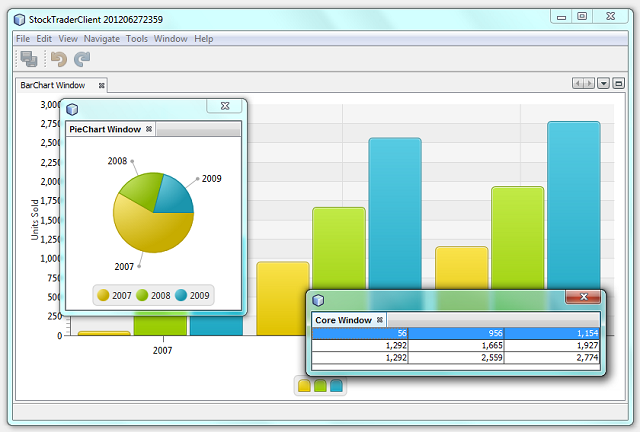
At the end of this tutorial, you will have various JavaFX charts in a NetBeans Platform application, as can be seen above, together with instructions and an API for plugging in additional charts.
For troubleshooting purposes, you are welcome to download the completed tutorial source code.
Examining the Swing Interop Sample
We begin by looking at a sample that comes with NetBeans IDE. It provides all the JavaFX code we’ll need. In the following sections, we’ll port the code to a NetBeans Platform application.
-
Choose File > New Project (Ctrl+Shift+N). Under Categories, select Samples | JavaFX. Under Projects, select SwingInterop.
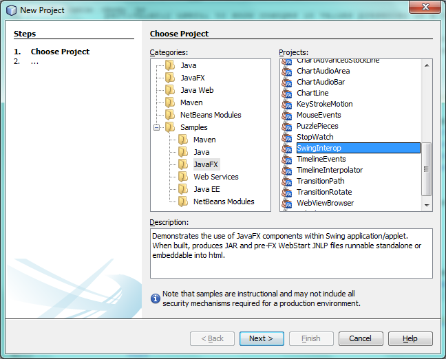
Click Next.
-
In the Name and Location panel, specify where the project should be stored:
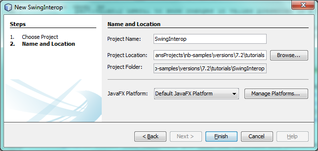
Click Finish.
-
Browse through the structure of your new application:
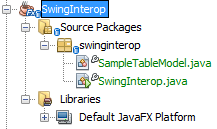
-
Right-click the application and choose Run. You should now see the following:
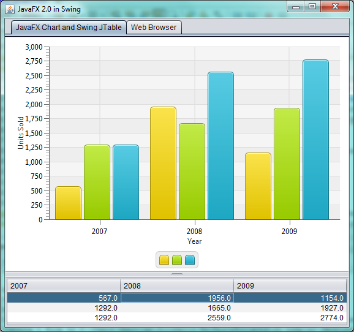
Change the first value in the 2008 table and press Enter. Notice that the chart is animated while the value changes.
-
For the application we’re going to create, we don’t need the "Web Browser" tab. Let’s modify the sample application so that we have exactly the code we need. All the changes below apply to the class
SwingInterop.java, because we can useSampleTableModelunchanged.-
Delete the
createBrowser()method. -
Delete all references to
browserFxPanel, which is theJFXPanelthat embeds the JavaFX web view, which we do not need. -
Replace the
JTabbedPaneandJSplitPanewith aJPanel.
-
The init method should now be as follows:
public void init() {
tableModel = new SampleTableModel();
// create javafx panel for charts
chartFxPanel = new JFXPanel();
chartFxPanel.setPreferredSize(new Dimension(PANEL_WIDTH_INT, PANEL_HEIGHT_INT));
JPanel panel = new JPanel();
panel.setLayout(new BorderLayout());
//JTable
JTable table = new JTable(tableModel);
table.setAutoCreateRowSorter(true);
table.setGridColor(Color.DARK_GRAY);
SwingInterop.DecimalFormatRenderer renderer = new SwingInterop.DecimalFormatRenderer();
renderer.setHorizontalAlignment(JLabel.RIGHT);
for (int i = 0; i < table.getColumnCount(); i++) {
table.getColumnModel().getColumn(i).setCellRenderer(renderer);
}
JScrollPane tablePanel = new JScrollPane(table);
tablePanel.setPreferredSize(new Dimension(PANEL_WIDTH_INT, TABLE_PANEL_HEIGHT_INT));
JPanel chartTablePanel = new JPanel();
chartTablePanel.setLayout(new BorderLayout());
chartTablePanel.add(chartFxPanel, BorderLayout.CENTER);
panel.add(chartTablePanel, BorderLayout.CENTER);
panel.add(tablePanel, BorderLayout.SOUTH);
add(panel, BorderLayout.CENTER);
// create JavaFX scene
Platform.runLater(new Runnable() {
public void run() {
createScene();
}
});
}Run the application again and you should see the following, that is, the JavaFX chart is now directly in a JPanel :
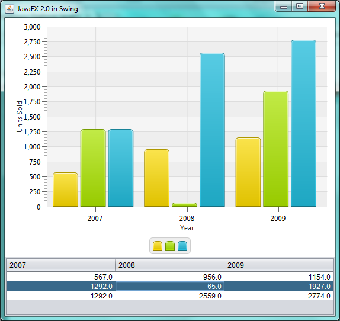
You now have code that is ready to be ported to a NetBeans Platform application.
Setting Up the Application
Let’s imagine that we’re creating a stock trader application. That provides a desktop client scenario where JavaFX charts would be useful to integrate.
-
Choose File > New Project (Ctrl+Shift+N). Under Categories, select NetBeans Modules. Under Projects, select NetBeans Platform Application:
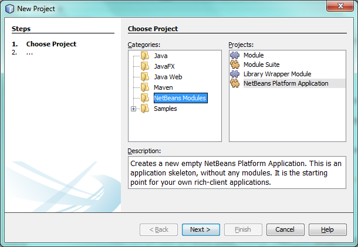
Click Next.
-
In the Name and Location panel:
-
In the Project Name field, type
StockTraderClient. -
In the Project Location field, change the value to any directory on your computer where the application will be stored.
-
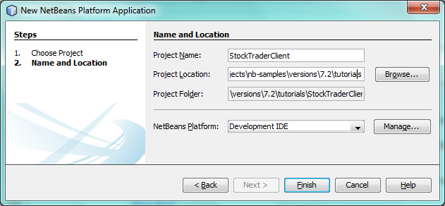
Click Finish. The IDE creates the StockTraderClient project:
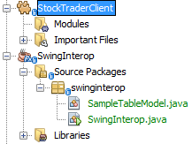
You’re now ready to create a module where you’ll embed the JavaFX chart into a TopComponent .
Embedding a JavaFX Chart in a TopComponent
We begin by creating a new module. Then we use the New Window wizard to create a new TopComponent . We round off the section by moving the code from the Swing Interop sample into the TopComponent .
Create the Module
In this section, you use the New Module wizard to create a new module.
-
Right-click the Modules node and choose Add New. The module we’re creating is going to contain the core functionality of the application. Ultimately, there’ll be many modules that will be optional, such as a range of charting windows, while this module will always remain essential to the application. Hence, we will name this module
Core: 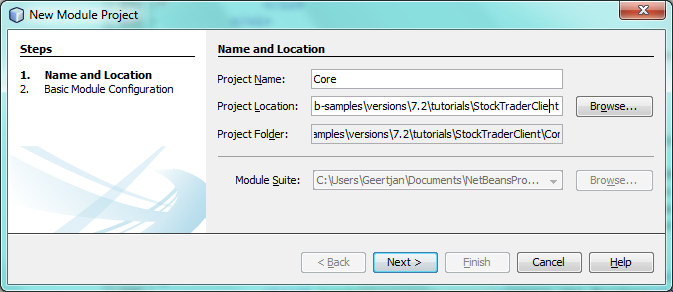
Click Next.
-
We imagine that we own a URL
stocktrader.org, which means that that URL is unique. Turning the URL around, we arrive at the prefix of the code base for all our functionality modules. Next, in this particular case, we addcore, since that is the name of our module and so we haveorg.stocktrader.coreas the unique identifier of our module: 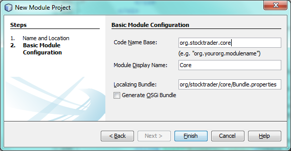
Click Finish. We now have a new module in our application, named Core .
Create the TopComponent
In this section, you use the New Window wizard to create a new window.
-
Right-click the
org.stocktrader.corepackage and choose New | Other. In the Module Development category, choose Window:
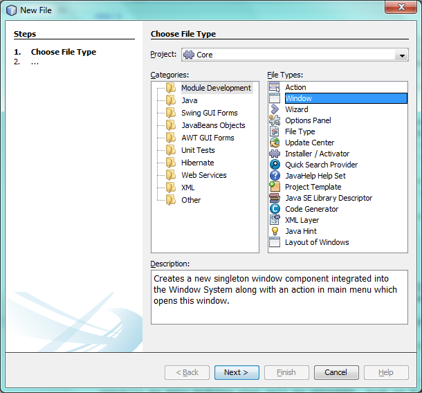
Click Next.
-
In the Window Position drop-down, choose "editor". Select "Open on Application Start":
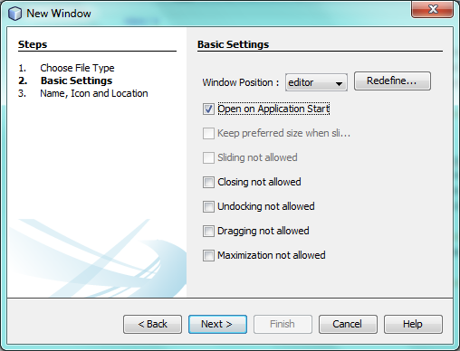
Click Next.
-
Type "Core" as class name prefix:
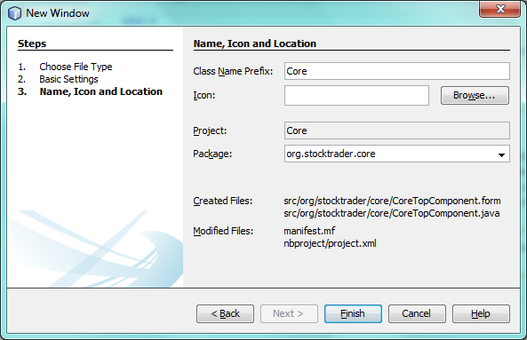
Click Finish. We now have a new window in our application, named CoreTopComponent , together with libraries that are the dependencies required by CoreTopComponent .
Port the JavaFX Chart
In this section, you move the useful parts of the Swing Interop sample into your Core module.
-
Copy the
SampleTableModel.javafile into theorg.stocktrader.corepackage. Do so by copying the class, right-clicking on the package where you want to copy it to, and choosing Paste | Refactor Copy and then clicking the Refactor button.
-
Copy the fields at the top of the
SwingInterop.javafile to the top of theTopComponent.
-
Copy the methods
createScene,createBarChart, andDecimalFormatRendererinto the body of theTopComponent.
-
Copy the
initmethod into theTopComponentand changeSwingInterop.DecimalFormatRenderertoDecimalFormatRenderer.
-
Change the constructor of the
TopComponentto set the layout and to call theinitmetod, as follows, that is, by adding the two highlighted lines below:
public CoreTopComponent() {
initComponents();
setName(Bundle.CTL_CoreTopComponent());
setToolTipText(Bundle.HINT_CoreTopComponent());
setLayout(new BorderLayout());
init();
}-
Right-click the application, choose Run, and the application starts up, showing the JavaFX chart, together with the
JTablethat controls it:
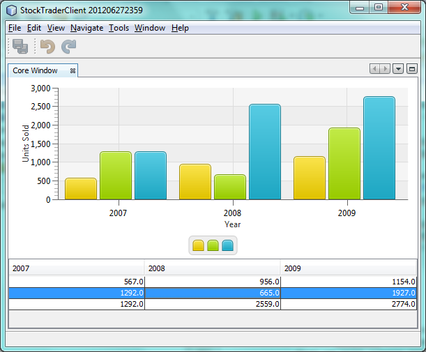
Change the first value in the 2008 table and press Enter. Notice that the chart is animated while the value changes.
In this section, you integrated a JavaFX chart into a TopComponent . In the next section, we will begin to make the application more modular. By the end of that section, the JTable will be in one module, while the JavaFX Chart will be in another.
Splitting the Table from the Chart
To make the application more modular, we will move the JavaFX chart into a separate module. Because the interaction between the JavaFX chart and the JTable is done via the SampleTableModel , we will move that class into a separate module, too. That module will be the API between the table and the chart.
When you complete this section, you will have a modular infrastructure letting you provide alternative JavaFX charts, which will all be made available by separate modules that integrate with the SampleTableModel in the API module.
Create the Stock Trader API Module
In this section, you create a new module for the SampleTableModel class. You expose the package containing the class and you set a dependency on it in the Core module.
-
Right-click on the StockTraderClient’s Modules node and choose Add New. Create a new module, named
StockTraderAPI. When you click Next, setorg.stocktrader.apias the code name base for the module. Click Finish and you will have a new module, named StockTraderAPI.
-
In the Core module, right-click on
SampleTableModeland choose Cut. Next, in the StockTraderAPI module, right-click on theorg.stocktrader.apipackage and choose Paste | Refactor Copy and then click Refactor. The class is moved into the new package, while it’s package statement has been updated.
-
Create a new Java class named
StockTraderUtilitiesin theorg.stocktrader.apipackage. In this class, create a method that will ensure that only one instance ofSampleTableModelis made available:
package org.stocktrader.api;
public class StockTraderUtilities {
private static SampleTableModel stm = null;
public static SampleTableModel getSampleTableModel() {
if (stm == null){
return stm = new SampleTableModel();
} else {
return stm;
}
}
}-
Right-click on the StockTraderAPI project node and choose Properties. In the Project Properties dialog, click the API Versioning tab. Then put a checkmark next to the package containing the classes that you want to expose to the rest of the application, as shown below:
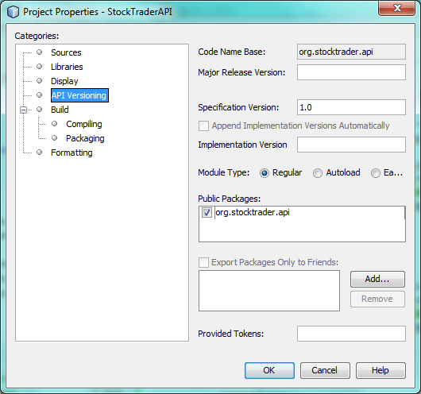
Click OK. Now the package containing our classes has been exposed to the rest of the application.
-
In the Core module, right-click on Libraries node and choose Add Module Dependency. Set a dependency on the StockTraderAPI.
Create the Bar Chart Module
In this section, you create a module containing a TopComponent where you will embed the JavaFX chart that is currently in the CoreTopComponent . Since the table and the JavaFX chart interact via the SampleTableModel , the modules containing the table and the chart will both depend on the StockTraderAPI module.
-
Right-click on the StockTraderClient’s Modules node and choose Add New. Create a new module, named
BarChart. When you click Next, setorg.stocktrader.chart.baras the code name base and "Chart - Bar" as the display name. Click Finish and you will have a new module, named "Chart - Bar", which we will refer to below as the "bar chart module".
-
Right-click on the bar chart module’s Libraries node and choose Add Module Dependency. Set a dependency on the StockTraderAPI module, so that the bar chart module will have access to the table model.
-
In the bar chart module, use the New Window wizard to create a new window in the editor position, which should open at start up, with
BarChartas the class name prefix.
-
Open
CoreTopComponentandBarChartTopComponentand do the following:-
Move the methods
createSceneandcreateBarChartinto theBarChartTopComponent. -
Delete
DecimalFormatRendererand all references to it. We’ll not use it at the moment, since it’s not directly relevant to the application we’re creating. -
Move the fields
chartFxPanelandchartinto theBarChartTopComponent. -
Copy the field
tableModelinto theBarChartTopComponentbecause bothTopComponentswill need to have access to this class. -
In
CoreTopComponent, clean up theinitmethod, so that it only contains the code that you actually need:
-
public void init() {
tableModel = StockTraderUtilities.getSampleTableModel();
JTable table = new JTable(tableModel);
table.setAutoCreateRowSorter(true);
table.setGridColor(Color.DARK_GRAY);
add(table, BorderLayout.CENTER);
}Similarly, in BarChartTopComponent , create an init method that only contains the chart-related code:
public void init() {
tableModel = StockTraderUtilities.getSampleTableModel();
chartFxPanel = new JFXPanel();
add(chartFxPanel, BorderLayout.CENTER);
//Make sure to add the line below:
Platform.setImplicitExit(false);
Platform.runLater(new Runnable() {
public void run() {
createScene();
}
});
} Platform.setImplicitExit sets the implicitExit attribute to the specified value. If this attribute is true, the JavaFX runtime will implicitly shutdown when the last window is closed; the JavaFX launcher will call the Application.stop() method and terminate the JavaFX application thread. If this attribute is false, the application will continue to run normally even after the last window is closed, until the application calls exit(). The default value is true.
Notice how modulerizing the code is little more than refactoring. And, in the end, you have code that is much clearer than it was in the beginning.
-
In
BarChartTopComponent, add these lines to the end of the constructor, to set the layout and call theinitmethod:
setLayout(new BorderLayout());
init();-
In
CoreTopComponent, change the@TopComponent.Registrationso that "mode" is set to "output", instead of "editor". That way, our table will be displayed at the bottom of the application frame, while the chart will be displayed in the editor area, which makes for a better appearance.
-
Right-click the application, choose Run, and the application starts up, showing the JavaFX chart, together with the
JTablethat controls it. This time, however, the table and the chart are in separate windows, though they’re able to interact because they share a common table model:
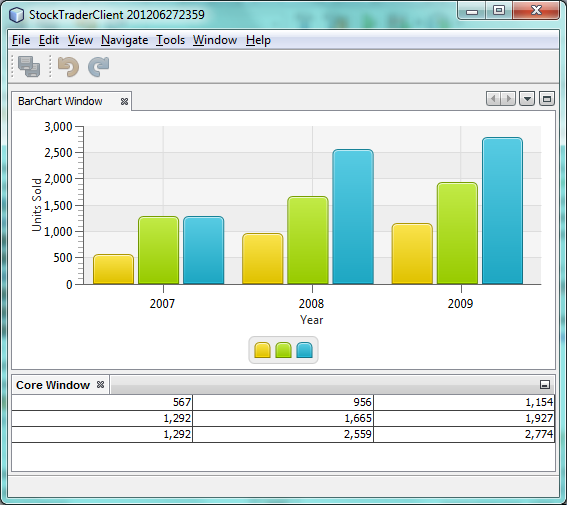
Change a value in the table and press Enter. Notice that the chart is animated while the value changes.
In the final section of this tutorial, we will add new modules, each containing new JavaFX charts, which will be integrated with the rest of the application because they will all share the same table model.
Plugging in New Charts
In this section, we add new modules providing a JavaFX pie chart and a JavaFX area chart. They will both be animated, just like the bar chart. Whenever the user changes a value in the table, all charts will be animated while performing the change.
Create the Pie Chart Module
In this section, you create a module containing a TopComponent where you will embed the JavaFX pie chart. The module will need to have access to the JavaFX classes, as well as to the Stock Trader API.
-
Right-click on the StockTraderClient’s Modules node and choose Add New. Create a new module, named
PieChart. When you click Next, setorg.stocktrader.chart.pieas the code name base and "Chart - Pie" as the display name. Click Finish and you will have a new module, named "Chart - Pie", which we will refer to below as the "pie chart module".
-
Right-click on the bar chart module’s Libraries node and choose Add Module Dependency. Set a dependency on the StockTraderAPI module, so that the pie chart module will have access to the table model.
1. In the pie chart module, use the New Window wizard to create a new window in the explorer position, which is the left-most window in the NetBeans Platform, which should open at start up:
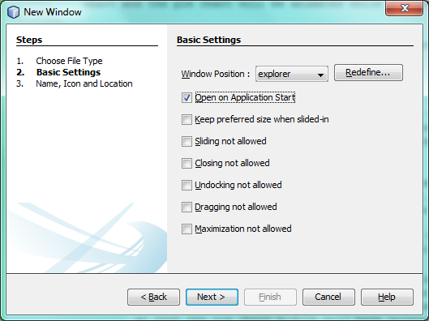
Click Next and set PieChart as the class name prefix. Click Finish.
-
Copy the code you added to the
BarChartTopComponentinto thePieChartTopComponent. However, instead of a bar chart, you now want to create a pie chart:
public PieChart createPieChart() {
ObservableList data = FXCollections.observableArrayList();
List<String> columnNames = tableModel.getColumnNames();
for (String string : columnNames) {
data.add(new PieChart.Data(string, 20));
}
final PieChart chart = new PieChart(FXCollections.observableArrayList(data));
tableModel.addTableModelListener(new TableModelListener() {
public void tableChanged(TableModelEvent e) {
if (e.getType() == TableModelEvent.UPDATE) {
final int row = e.getFirstRow();
final int column = e.getColumn();
final Object value = ((SampleTableModel) e.getSource()).getValueAt(row, column);
Platform.setImplicitExit(false);
Platform.runLater(new Runnable() {
public void run() {
PieChart.Data s = chart.getData().get(row);
s.setPieValue((Double)value);
}
});
}
}
});
chart.setId("BasicPie");
return chart;
}-
Run the application and notice that you now have a pie chart and that, when you make changes to the table, the pie chart animates together with the bar chart:
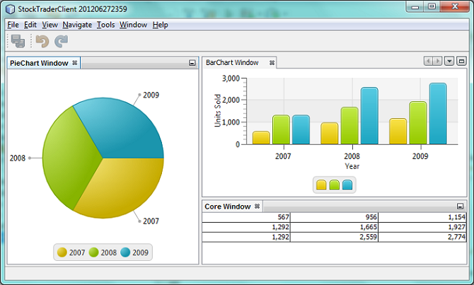
Create the Area Chart Module
In this section, you create a module containing a TopComponent where you will embed the JavaFX area chart.
-
Follow all the steps in the previous section, using "AreaChart" as the project name,
org.stocktrader.chart.areaas the code name base, and "Chart - Area" as the display name. Add dependencies on the Stock Trader API. Use the New Window wizard to create a newTopComponent, in the properties position, which should open at start up.
-
Copy the code you added to the
BarChartTopComponentinto theAreaChartTopComponent. However, instead of a bar chart, you now want to create an area chart:
protected AreaChart<Number, Number> createAreaChart() {
NumberAxis xAxis = new NumberAxis();
NumberAxis yAxis = new NumberAxis();
AreaChart<Number,Number> ac = new AreaChart<Number,Number>(xAxis,yAxis);
// setup chart
ac.setTitle("Area Chart Example");
xAxis.setLabel("X Axis");
yAxis.setLabel("Y Axis");
// add starting data
for (int s=0;s<3;s++) {
XYChart.Series<Number,Number> series = new XYChart.Series<Number,Number>();
series.setName("Data Series "+s);
double x = 0;
while (x<95) {
series.getData().add(new XYChart.Data<Number,Number>(x, Math.random()*99));
x += 5 + (15*Math.random());
}
series.getData().add(new XYChart.Data<Number,Number>(99d, Math.random()*99));
ac.getData().add(series);
}
return ac;
}-
Run the application and notice that you now have three charts that, when you make changes to the table, all change simultaneously:
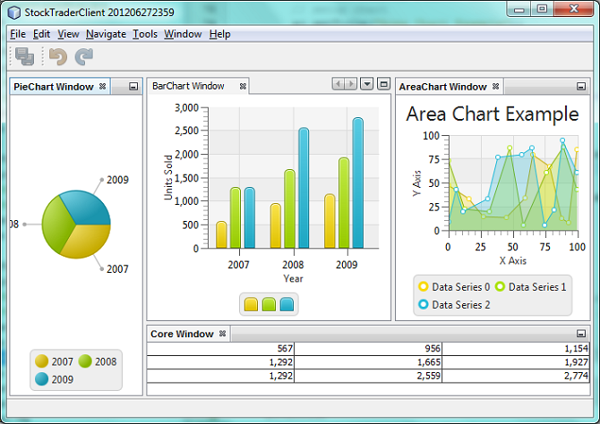
The tutorial is complete. You have created a modular application on the NetBeans Platform, while making use of JavaFX chart technology.